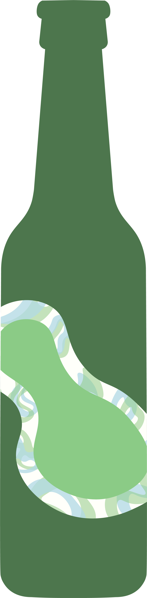
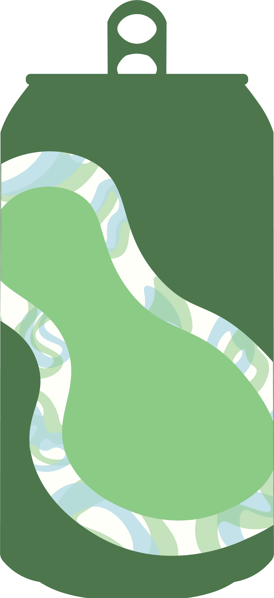
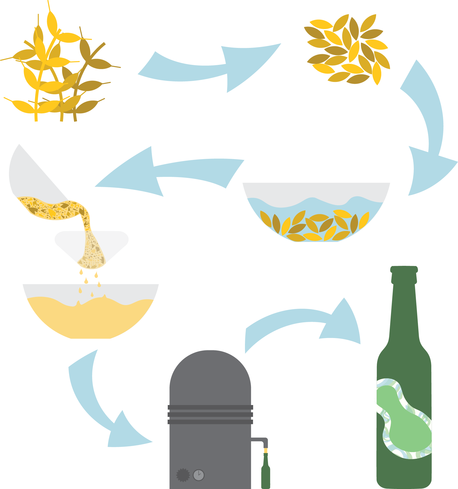
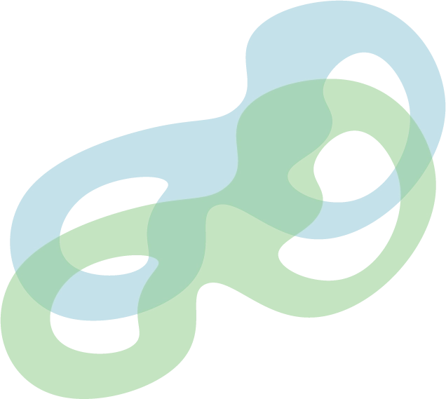
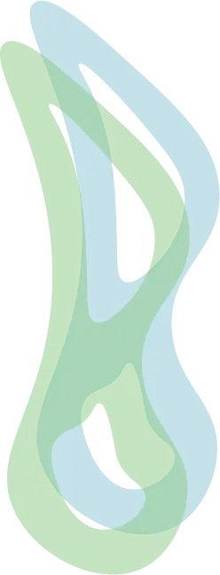
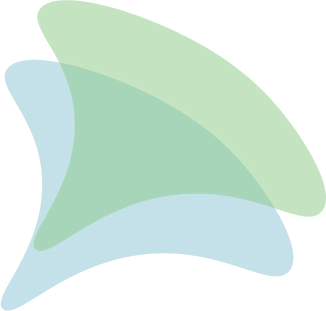
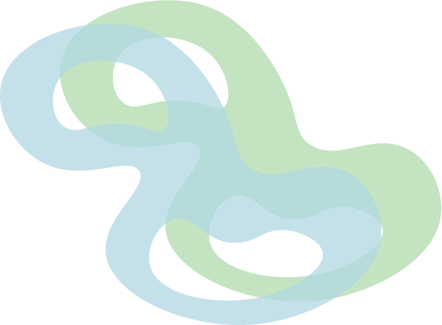
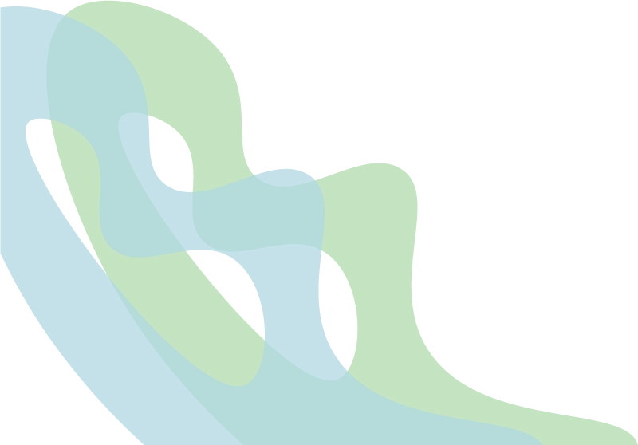
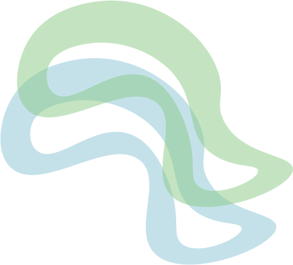
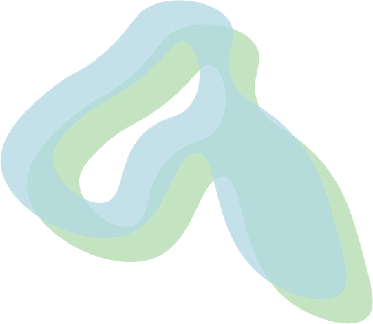

Kampagne
Varianter
Om bryggeriet
Produktionen
Historien bag
Vind en fest
for alle dine
nærmeste
læs mere her


nyhed
Alkoholfri øl, der smager af ØL
Varianter
Produktionen

Historien bag
Læs mere
      